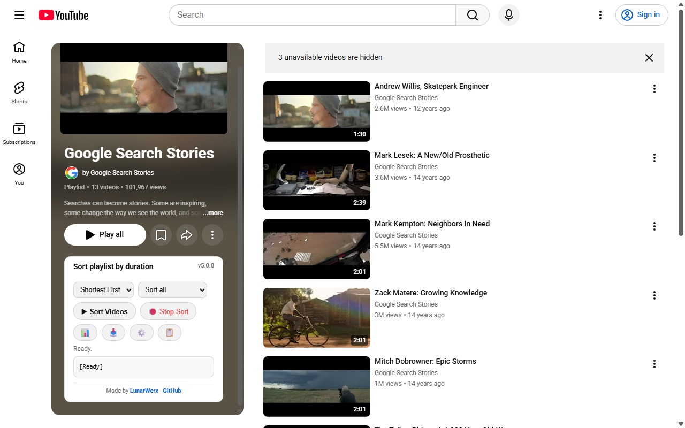
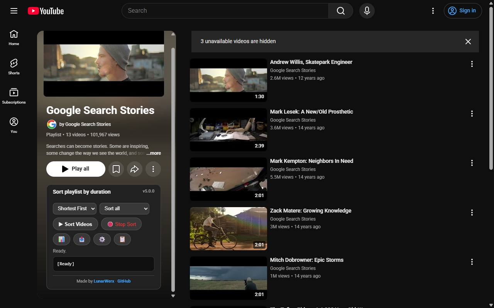
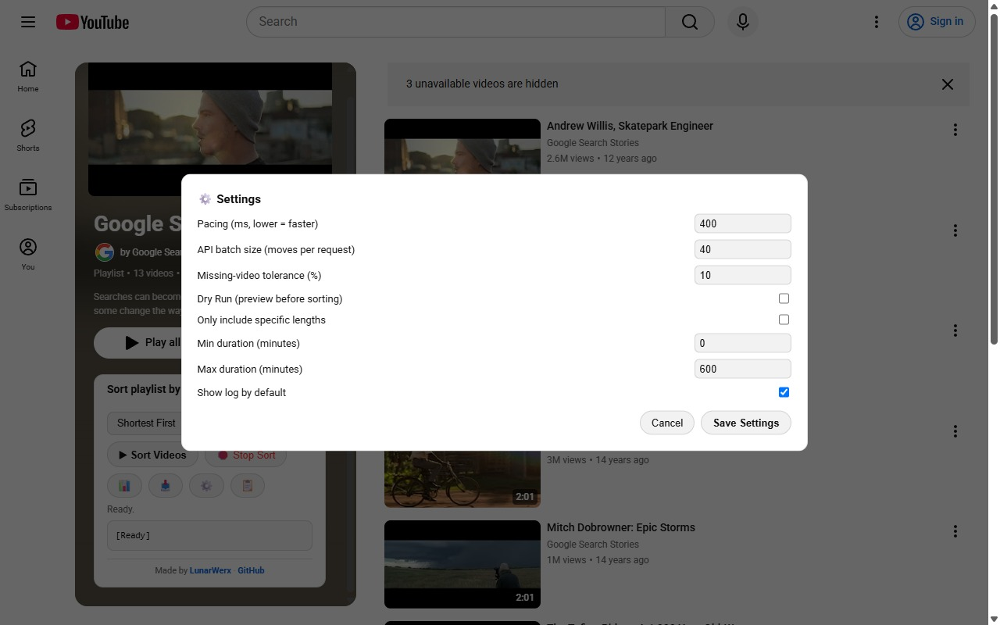
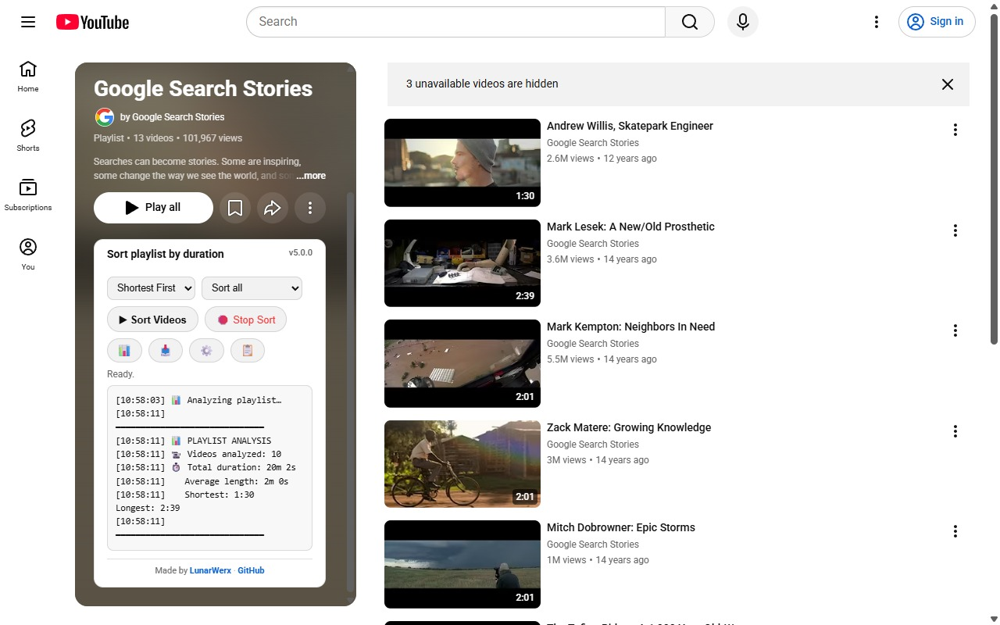

Reorder a playlist you own by video length, shortest or longest first, in seconds. YouTube makes you drag videos one at a time. YTSort does the whole list for you and verifies it actually worked.
Drag the red button up to your bookmarks bar, then click it on any playlist page.

All three run the same engine. Pick whichever fits how you browse. Nothing is sent anywhere; it only talks to YouTube, using your own login.
A single bookmark that loads the latest version on the fly. Nothing to install or update; drag it once and it stays current forever.
Install once in Tampermonkey or Violentmonkey and it auto-updates. The panel is there every time you open a playlist, no clicking a bookmark.
A zero-permission unpacked extension. Grab the repo, enable Developer mode, and load the extension folder. A Web Store listing is on the way.
A ground-up rebuild (v5) engineered to be quick and to prove its work, so it never silently half-finishes.
Sorts through YouTube's own reorder API. A 300-video playlist finishes in seconds, not minutes.
Re-reads the final order from YouTube's servers and only says "done" when it's truly sorted.
Shortest-first or longest-first, with an alphabetical tiebreaker for equal-length videos.
Reads every video, not just the handful currently loaded on screen.
Preview the exact before/after order first, then apply it with one click.
Only sort videos within a duration range; everything else moves to the end.
Total, average, shortest and longest at a glance. Export the whole list to CSV.
Matches YouTube's theme automatically, panel and all.
If the fast path is ever unavailable, it falls back to a verified drag-and-drop engine.
Any playlist you created, or your Watch Later. You can only reorder playlists that are yours.
YouTube only allows reordering in Manual mode. The panel reminds you if you forget.
It appears just below the playlist header. Pick shortest or longest first, and a scope if you want.
Watch the log. When it verifies the new order it refreshes the page so you see the result immediately.


